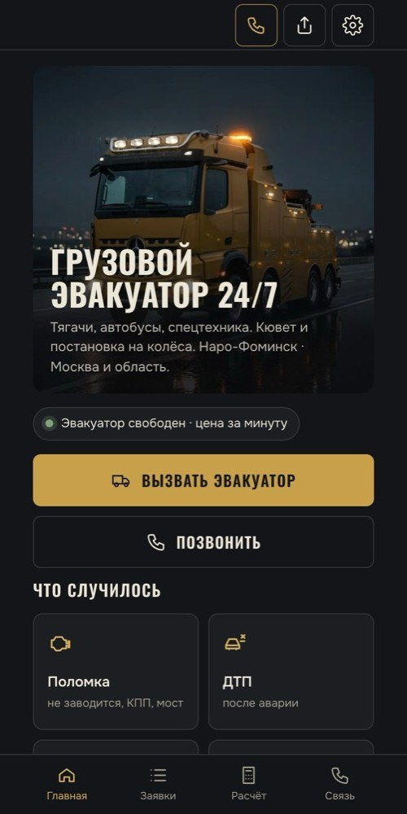

Клиенты записываются сами, пока вы работаете
Бот и мини-приложение в MAX и Telegram для мастерской, салона, тренера или службы. Заявка с фото, запись, прайс, переписка — в мессенджере, которым клиенты уже пользуются.
100–150 тыс. ₽под ключ · бот от 7 дней, готовый продукт за 14
под ключ — бот и мини-приложение
- от 7 дней
- бот принимает заявки
- 14 дней
- готовый продукт с мини-приложением
- 1 день
- смета после бесплатного разбора




Нажмите на телефон — откроется проект: задача, что сделали, экраны и сроки.
Что получаете за 100–150 тысяч
Собираем из готовых блоков под ваше дело. Точный набор — на бесплатном разборе, цена фиксируется в смете до предоплаты.
Бот в MAX или Telegram
Заявка с фото, прайс по разделам, витрина, переписка по заявке, уведомления «принята», «статус изменился».
Мини-приложение
Открывается кнопкой из бота: калькулятор цены, запись, галерея работ, магазин, кабинет клиента с историей.
Панель владельца
Заявки одним списком со статусами, ответ клиенту, прайс и витрина без программиста, выгрузка в Excel.
Сервер в РФ на вас
Сервер, домен, база и доступы оформлены на вас. Согласие на обработку данных в боте и политика — в работе, не отдельно.
Обучение
Кабинет бота в MAX заводим вместе на созвоне. Показываем, как отвечать из панели и менять прайс.
Входит в цену
- Бот, мини-приложение и панель — разработка и запуск
- Настройка сервера, HTTPS, сайт на своём домене
- Согласие в боте и политика обработки данных
- Правки по приёмке каждого этапа
Оплачивается отдельно
- Сервер и домен — по счетам хостинга напрямую, мы к этим деньгам не прикасаемся
- Приём оплаты (ЮKassa) и публичные статусы заказа — этап 3, по желанию, когда первые два обкатаны на живых клиентах
Что бот делает сам
У каждого проекта — своя рутина, которую раньше мастер делал руками. По одной из каждого.
Собирает расписание шести катков и учитывает дорогу между нимиРасписание обновляется само, дорога между катками уже заложена в план. Плюс дневник и разбор видео.
Проект →Раскладывает фото из рабочей группы по услугамГалерея работ по разделам пополняется сама — мастер просто делится снимком с коллегами.
Проект →Предлагает окна под длину работы и ведёт склад лаковКлиентка видит только окна, куда процедура помещается, а бот сам напомнит: «пора на коррекцию».
Проект →Считает цену с учётом мороза и снегопада, делает заявку из звонкаЦена по грузовым дорогам за минуту, подача от текущего места эвакуатора.
Проект →Запись по фото фары, расчёт цены, гарантия по госномерув разработкеКлиент присылает фото фары и сразу видит цену, а гарантия хранится по госномеру машины — без бумажных талонов.
Проект →Как работаем
Сначала бот, потом мини-приложение. Рабочий инструмент у вас появляется через неделю, а не в конце.
Разбор задачи
Бесплатно. Полчаса разговора: что уже есть, откуда клиенты, что отнимает время. Ничего не должны.
Смета
Состав этапов и цена — за рабочий день. Цена фиксируется до предоплаты и не растёт.
Бот работает
Заявка с фото, прайс, переписка, уведомления, панель. Вы уже принимаете клиентов.
Мини-приложение
Калькулятор, запись, галерея, кабинет клиента — по кнопке из того же бота.
Предоплата 50 % по этапу, остаток — после приёмки этапа. Точные сроки — в договоре, отсчёт от получения материалов: фото, прайса, текстов.
Почему MAX
MAX предустановлен на новых телефонах, бизнес в него переходит. Людям проще написать, чем звонить.
Платформа молодая. У нас стек под неё уже работает у живых заказчиков.
Бот собирает имя, телефон и фото — значит, вы оператор персональных данных. Сервер, база и копии — в РФ, согласие в боте.
Что нужно от вас
- МатериалыФото работ, прайс или хотя бы вилки, описания услуг. Самое долгое — начинайте сразу.
- Самозанятость, ИП или юрлицоБот в MAX регистрируется на бизнес-аккаунт по ИНН. Статус заводится за день.
- Один ответственныйКто отвечает на вопросы по проекту. Обычно вы сами.
- Канал в MAXЕсли нужны розыгрыши: подписку бот проверяет внутри того же мессенджера.
- Приёмка этапаПосмотреть, потыкать, сказать, что не так — до того, как увидят клиенты.
Частые вопросы
Сколько стоит сервер?
Сервер и домен оплачиваете вы — по счетам хостинга, напрямую, мы к этим деньгам не прикасаемся. Тариф подбираем на разборе под ваш объём, регистрацию проходим вместе, сервер настраиваем сами.
Кому принадлежит бот?
Вам. Что оплачено вами — вам и принадлежит: домен, сервер, база и доступы оформляются на вас с первого дня.
Что будет, если вы пропадёте?
Бот работает на вашем сервере, с вашим доменом и вашими доступами. Он не выключится вместе с нами, а данные клиентов остаются у вас.
Можно в Telegram, а не в MAX?
Да. dabu_ice работает в Telegram, ПилоТаж — в MAX и Telegram сразу. Где ваши клиенты — там и делаем, можно в обоих.
Сколько правок можно внести?
Каждый этап вы принимаете сами: смотрите, пробуете, говорите, что не так — правим до того, как бот увидят клиенты. Остаток оплаты — только после приёмки.
Начнём с разбора — он бесплатный
Напишите в бот: задам несколько вопросов о вашем деле и покажу, что имеет смысл делать первым этапом. К работе не обязывает.
Отвечаю сам, обычно в течение дня.
, самозанятый, Москва.